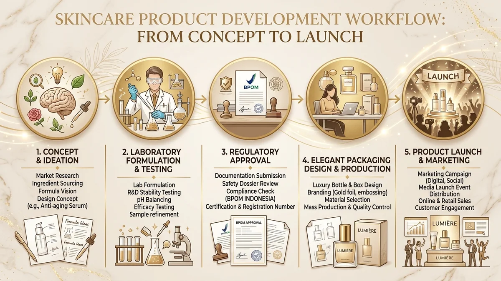

Cara memulai bisnis skincare adalah riset pasar, menentukan konsep produk, memilih formulasi atau maklon, mengurus izin BPOM dan halal, lalu meluncurkan produk secara terukur.
- Pasar kosmetik Indonesia bernilai sekitar 9,74 miliar dolar AS pada 2025 dan jumlah industrinya terus bertambah.
- Pemula umumnya memulai dari maklon agar tidak perlu membangun pabrik dan fasilitas laboratorium sendiri.
- Produk skincare wajib memiliki notifikasi BPOM dan, sejak 17 Oktober 2026, sertifikat halal resmi.
- Kemasan, HPP, dan uji laboratorium harus direncanakan matang sebelum produk diproduksi massal.
- Peluncuran bertahap dengan batch kecil secara efektif mengurangi risiko penumpukan stok tidak terjual.
Mengapa Bisnis Skincare Masih Menarik untuk Pemula?
Bisnis skincare masih menarik karena pasar kosmetik Indonesia bernilai sekitar 9,74 miliar dolar AS pada 2025 dan jumlah pelaku industrinya terus bertambah setiap tahun.
Kementerian Perindustrian menyebut nilai pasar kosmetik nasional pada 2025 mencapai angka fantastis tersebut, membuktikan antusiasme belanja masyarakat yang tinggi.
Data BPOM yang disampaikan Kemenperin pada Mei 2026 mencatat jumlah industri kosmetik dalam negeri naik dari 1.292 pada 2024 menjadi lebih dari 1.500 pada akhir 2025.
Sekitar 90 persen di antaranya merupakan industri kecil dan menengah (IKM), membuktikan bahwa peluang bagi perintis brand lokal masih terbuka sangat lebar.
Angka ini menunjukkan dua realitas penting. Peluang pasarnya sangat besar, tetapi persaingannya juga padat sehingga brand baru wajib memiliki nilai pembeda yang kuat.
Kemenperin juga mencatat bahwa bahan baku kosmetik di Indonesia masih didominasi impor hingga sekitar 80 persen dari total pasokan industri.
Bagi pemilik brand, hal ini berarti biaya bahan dapat berubah mengikuti fluktuasi kurs mata uang asing, sehingga perencanaan keuangan awal perlu memberi ruang dana cadangan.
Apa Itu Brand Skincare dan Siapa yang Cocok Memulainya?
Brand skincare adalah merek produk perawatan kulit yang dipasarkan oleh pemiliknya, sementara proses produksi dapat dikerjakan mandiri atau dititipkan ke pabrik maklon berizin resmi.
Pemilik brand tidak harus berlatar belakang kimia atau farmasi untuk memulai bisnis ini secara profesional dan berkelanjutan.
Banyak brand sukses dimulai oleh kreator konten, pemilik klinik kecantikan, apoteker, hingga pelaku UMKM yang memahami kebutuhan spesifik target konsumennya.
Keahlian teknis mengenai kestabilan zat aktif dan proses pencampuran sediaan dapat sepenuhnya diperoleh dari tim formulator pabrik mitra maklon.
Bisnis ini sangat cocok bagi pelaku usaha yang siap bekerja mengikuti regulasi pemerintah, teliti memahami angka biaya, dan sabar menjalani proses pengembangan produk berbulan-bulan.
Manfaat utamanya adalah kontrol penuh atas identitas merek, penetapan harga jual ritel, serta kebebasan merancang narasi cerita brand di pasaran.
Sedangkan batasannya adalah kewajiban mutlak menjaga kepatuhan izin edar serta risiko modal seperti stok tidak terjual atau keluhan konsumen bila mutu tidak konsisten.
Bagaimana Cara Riset Pasar dan Menentukan Konsep Brand?
Riset pasar skincare dilakukan dengan menentukan target konsumen, masalah kulit yang ingin dibantu, harga pesaing, dan pembeda brand sebelum formula atau kemasan dibuat.
Siapa target konsumen brand skincare Anda?
Tentukan kelompok yang spesifik, misalnya remaja dengan masalah kulit berjerawat, pekerja kantoran dengan kulit sensitif dehidrasi, atau konsumen yang mencari produk halal berbahan sederhana.
Semakin jelas karakteristik target pasarnya, semakin mudah bagi Anda dan tim formulator menentukan formula zat aktif, rentang harga, dan gaya komunikasi promosi.
Apa pembeda brand dibanding pesaing?
Pembeda produk (unique selling proposition) dapat berupa fokus kategori, pilihan bahan alami lokal, kenyamanan tekstur, inovasi kemasan, atau cerita brand yang menginspirasi.
Amati minimal sepuluh brand pesaing sejenis di marketplace: perhatikan kisaran harga, varian terlaris, ulasan keluhan pembeli, serta klaim manfaat yang mereka tonjolkan.
Bagaimana memvalidasi ide sebelum produksi?
Validasi ide dapat dilakukan lewat survei kuesioner singkat di media sosial, interaksi komunitas kecantikan, atau program pre-order sampel terbatas.
Hindari membuat klaim promosi yang menjanjikan hasil instan atau efek pasti, karena klaim skincare wajib mematuhi pedoman BPOM dan tidak boleh menyerupai klaim obat medis.
Produksi Sendiri atau Maklon: Mana yang Lebih Tepat?
Maklon skincare lebih cocok untuk pemula bermodal terbatas karena pabrik menyediakan fasilitas dan formulasi, sedangkan produksi sendiri memberi kontrol penuh dengan investasi modal yang jauh lebih besar.
Maklon adalah jasa manufaktur dari pabrik kosmetik berizin untuk brand pemesan, di mana pabrik sudah memiliki sertifikat Cara Pembuatan Kosmetika yang Baik (CPKB) dan tim legalitas.

| Aspek Penilaian | Jasa Maklon Skincare | Produksi Sendiri |
|---|---|---|
| Modal awal | Relatif lebih ringan (hanya bayar pesanan batch) | Sangat besar (tanah, bangunan pabrik, mesin, staf ahli) |
| Formulasi | Tersedia formula siap pakai atau custom oleh apoteker | Wajib dikembangkan mandiri oleh tim riset internal |
| Kontrol proses | Terbatas pada kesepakatan kontrak kerja sama | Kontrol penuh 100 persen atas setiap tahapan |
| Minimal order (MOQ) | Mengikuti syarat minimum pabrik (misal 500-1.000 pcs) | Bebas mengikuti kapasitas mesin dan kebutuhan sendiri |
| Tanggung jawab izin | Dibagi bersama pabrik untuk registrasi BPOM & Halal | Sepenuhnya ditanggung sendiri oleh pelaku usaha |
| Kesesuaian | Sangat cocok untuk brand baru dan uji pasar awal | Cocok untuk brand yang sudah memiliki volume penjualan masif |
Pilihlah pabrik maklon dengan memeriksa legalitas izin usaha, sertifikat CPKB aktif, transparansi struktur biaya, serta kejelasan pembagian tanggung jawab formulasi dalam perjanjian tertulis.
Izin Apa Saja yang Wajib Diurus Sebelum Menjual Skincare?
Pelaku usaha skincare wajib mengurus Nomor Induk Berusaha (NIB), notifikasi kosmetik ke BPOM, dan sertifikat halal sebelum produk diedarkan secara komersial di wilayah Indonesia.
Apa itu NIB dan kenapa diperlukan?
Nomor Induk Berusaha (NIB) adalah identitas legal pelaku usaha yang diterbitkan secara elektronik melalui sistem Online Single Submission (OSS).
NIB menjadi pintu masuk utama perizinan berusaha lainnya dan menjadi syarat mutlak untuk menjalin kerja sama resmi dengan pabrik maklon, distributor, maupun platform marketplace.
Bagaimana alur notifikasi kosmetik BPOM?
Kosmetik beredar di Indonesia melalui mekanisme notifikasi kepada BPOM, di mana pemilik merek mendaftarkan formula lengkap, data produsen, dan rancangan label kemasan.
Produk yang disetujui akan memperoleh nomor notifikasi resmi yang wajib dicantumkan pada label fisik kemasan produk sebelum mulai dipasarkan ke konsumen.
Pelajari panduan regulasi terbarunya secara lengkap pada artikel panduan syarat BPOM skincare agar proses verifikasi berjalan mulus.
Apakah skincare wajib bersertifikat halal?
Ya. Berdasarkan PP 42/2024, kosmetik termasuk kelompok produk yang wajib bersertifikat halal setelah masa penahapan berakhir pada 17 Oktober 2026.
BPJPH mencatat sudah ada 81.343 produk kosmetik dalam negeri yang bersertifikat halal per Mei 2025, menandakan kepatuhan industri yang bergerak sangat cepat.
Pastikan Anda menyiapkan daftar bahan baku bersertifikat, alur proses produksi yang suci, serta dokumen penyelia halal bersama pihak pabrik maklon sejak awal.
Bagaimana Merancang Formula dan Memilih Produk Pertama?
Produk pertama sebaiknya sederhana dan mudah dipahami, seperti pembersih wajah, toner, serum, atau pelembap, dengan formula yang dirancang bersama formulator berpengalaman.
Mulailah dengan satu sampai tiga produk utama. Terlalu banyak varian di awal akan melipatgandakan modal kemasan, pengujian laboratorium, dan menyulitkan manajemen pergudangan.
Pilihlah konsentrasi bahan aktif yang terbukti aman dan efektif. Hindari bahan berbahaya yang dilarang undang-undang, seperti merkuri dan hidrokuinon.
Mintalah sampel produk uji (sample batch) dari pabrik maklon untuk mengevaluasi tekstur, aroma, daya serap, serta sensasi pemakaian pada kulit beberapa penguji internal.
Melakukan revisi di fase pengujian sampel jauh lebih murah dan aman daripada harus menarik ribuan produk yang sudah telanjur dicetak massal.
Mengapa Desain Kemasan Menentukan Kesan Pertama Brand?
Desain kemasan menentukan kesan pertama konsumen karena warna, bentuk botol, tipografi, dan label menyampaikan identitas serta reputasi mutu brand sebelum isi produk dicoba.
Kemasan skincare menjalankan dua fungsi krusial: menarik perhatian calon pembeli secara visual dan melindungi kestabilan formula zat aktif dari udara maupun cahaya.
Pilihan wadah seperti botol pump, dropper, atau jar harus disesuaikan secara cermat dengan kekentalan cairan dan sensitivitas bahan aktif yang digunakan.
Pelajari panduan estetika dan teknisnya pada artikel desain packaging skincare yang estetis dan menjual yang mengulas pemilihan jenis botol hingga tata letak informasi label resmi.
Bagaimana Menghitung Modal Awal dan Menentukan Harga Jual?
Modal awal skincare mencakup biaya formulasi, produksi sediaan, kemasan, perizinan legalitas, uji laboratorium, dan promosi, sedangkan harga jual ditentukan dari HPP ditambah margin realistis.
Susunlah anggaran dalam tiga pos utama: biaya manufaktur (maklon dan kemasan), biaya perizinan serta mutu (BPOM, halal, uji lab), dan biaya komersialisasi (foto produk, iklan, ongkos kirim).
Harga jual yang sehat harus selalu berangkat dari perhitungan Harga Pokok Penjualan (HPP) per unit produk yang akurat, bukan sekadar menebak harga produk milik kompetitor.
Simulasi rumus terperinci dan cara membagi biaya reject dapat Anda pelajari di panduan cara menghitung HPP dan strategi pricing skincare agar bisnis tidak mengalami kebocoran profit.
Mengapa Uji Laboratorium dan QC Tidak Boleh Dilewati?
Uji laboratorium dan quality control memastikan skincare bebas cemaran berbahaya, stabil selama masa simpan, dan memiliki kualitas seragam di setiap batch produksi.
Produk kosmetik diaplikasikan langsung pada jaringan kulit manusia secara berulang, sehingga batasan cemaran mikroba dan logam berat diatur sangat ketat oleh otoritas BPOM.
Sebagai contoh, batas cemaran merkuri ditetapkan tidak boleh melebihi 1 mg/kg sesuai Peraturan BPOM No. 16 Tahun 2024.
Uji stabilitas dipercepat juga wajib dilakukan untuk memastikan cairan tidak memisah, tidak berbau tengik, dan warna sediaan tidak berubah drastis sepanjang masa edar produk.
Rincian teknis pengujian ini diulas mendalam pada artikel panduan standar QC dan uji laboratorium skincare.
Bagaimana Strategi Peluncuran dan Penjualan Awal Skincare?
Peluncuran skincare yang realistis dimulai dari sistem pre-order atau batch produksi kecil, penguatan kanal marketplace dan media sosial, serta pengumpulan ulasan konsumen pertama.
Pada fase peluncuran perdana, pusatkan fokus pemasaran pada satu atau dua kanal penjualan utama agar alokasi anggaran promosi tidak terpecah sia-sia.
Sajikan informasi produk secara transparan: tampilkan daftar komposisi, instruksi cara pakai, tanggal kedaluwarsa, dan nomor registrasi BPOM yang valid.
Kumpulkan testimoni jujur dari pembeli pertama, dengarkan masukan mereka, lalu lakukan penyempurnaan pada formula atau kemasan sebelum Anda mencetak pesanan batch kedua yang lebih besar.
Apa Kesalahan Umum Saat Memulai Bisnis Skincare?
Kesalahan umum pemula meliputi melewatkan riset pasar objektif, merilis terlalu banyak varian produk sekaligus, menghitung HPP asal-asalan, dan mengabaikan pengurusan izin resmi.
Beberapa kekeliruan fatal lain yang patut Anda waspadai sejak hari pertama:
- Memilih mitra pabrik hanya atas dasar harga termurah tanpa memverifikasi sertifikat CPKB dan portofolio produknya.
- Memesan ribuan botol kemasan sebelum menguji kompatibilitas bahan dengan zat kimia formula di laboratorium.
- Tidak menyimpan sampel pertinggal (retained sample) sehingga kesulitan menelusuri sumber masalah ketika ada keluhan konsumen.
- Menunda pendaftaran notifikasi BPOM dan sertifikat halal sampai botol dan kardus luar sudah telanjur dicetak massal.
- Menghabiskan seluruh modal tunai untuk stok produksi perdana tanpa menyisakan dana cadangan untuk biaya pemasaran dan promosi.
Menghindari berbagai kesalahan di atas tidak membutuhkan modal raksasa, melainkan disiplin kerja terstruktur sesuai urutan tahapan yang benar.
Kesimpulan Praktis: Ringkasan 7 Langkah Memulai Bisnis Skincare
Memulai bisnis skincare berarti bergerak secara disiplin dari riset pasar, perancangan formula, legalitas izin edar, kemasan, perhitungan HPP, dan uji mutu laboratorium menuju peluncuran produk yang terukur.
Tujuh urutan langkah praktis yang wajib Anda jalankan secara berurutan:
- Tentukan target pasar dan pembeda brand: Temukan masalah kulit spesifik yang belum terjawab secara optimal oleh produk kompetitor.
- Pilih jalur produksi maklon terpercaya: Manfaatkan fasilitas berstandar CPKB agar modal awal lebih terjangkau dan efisien.
- Urus legalitas NIB, BPOM, dan Halal: Pastikan seluruh syarat regulasi terpenuhi sebelum produk ditawarkan ke publik.
- Rancang kemasan fungsional dan patuh aturan: Sediakan ruang informasi label yang jelas, proporsional, dan estetis.
- Hitung HPP menyeluruh dan tetapkan margin: Masukkan pos uji mutu dan potensi produk reject agar keuntungan bersih bisnis aman.
- Lakukan uji laboratorium dan kontrol mutu ketat: Pastikan formula lolos uji cemaran mikroba serta stabilitas sediaan.
- Luncurkan dalam batch kecil: Kumpulkan ulasan nyata pengguna awal untuk menyempurnakan strategi sebelum meningkatkan volume produksi.
Konsultasikan Brand Impian Anda
Siap mengubah ide kreatif menjadi produk skincare nyata berkualitas tinggi? Konsultasikan konsep, formulasi, dan kebutuhan izin brand Anda bersama tim kami melalui konsultasi maklon skincare sekarang juga untuk mendapatkan arahan langkah pertama yang tepat sasaran.